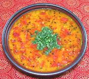

|
Masoor Lentils with TomatoesIndia - Bengal - Tomato Dhoney Pata Diye Masoor Dal | ||||
| Makes: Effort: Sched: DoAhead: |
5 cups ** 50 min Yes |
This is a quick, easy to make, but tasty and satisfying "weekday dish", served with rice. It has rather low chili heat and moderate spicing. | |||
|
1-1/4 1 2/3 2-3/4 1/2 1 ------- 2 1 ------- 2 |
# c c t t --- T t --- T |
Ripe Tomatoes (1) Green Chili (2) Masoor Dal (3) Water Turmeric Salt -- Tempering Ghee (4) Cumin Seeds -- Garnish Cilantro Leaves |
PREP - (18 min)
|
imp_mastom1 160914 bfsc70 - www.clovegarden.com
©Andrew Grygus - agryg@aaxnet.com - Linking to and
non-commercial use of this page is permitted.